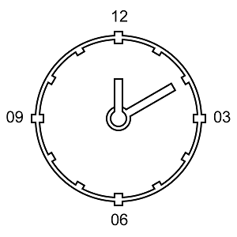

1. Užduotis C#, PHP, Java
Parašykite programą, kuri apskaičiuotų mažesnįjį kampą tarp analoginio laikrodžio valandos ir minučių rodyklių. Kai yra žinomas laikas (pvz: 08:13:00).
Laikrodis
Rodyklių judėjimas
| rodyklės pajūdėjimas per | |||
|---|---|---|---|
| rodyklė | 1 val. | 1 min. | 1 sek. |
| minutės | 360.0 ° | 6.0 ° | 0.1 ° |
| valandos | 30.0 ° | 0.5 ° | ~0.008 ° |
Rodyklės kampo apskaičiavimas
| rodyklės kampo skaičiavimo formulė | |
|---|---|
| minutės | (min. × 6.0) + (sek. × 0.1) |
| valandos | ((val. mod 12) × 30.0) + (min × 0.5) + (sek. × 0.008) |
| čia (h mod 12) konvertuoja 18:20 formatą į 06:20 formatą |
Mažiausio kampo tarp rodyklių apskaičiavimas
absoliutus_kampas = | minutes_kampas - valandos_kampas |
Jei (absoliutus_kampas didesnis arba lygus 180°) tuomet absoliutus_kampas = 360° - absoliutus_kampas